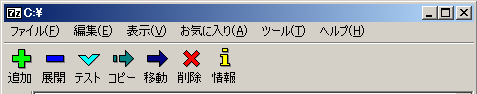
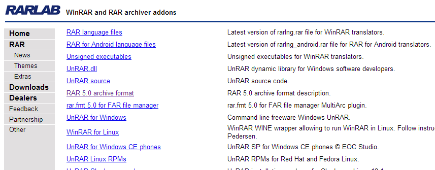

<!DOCTYPE html><html lang="ja"><head><meta charset="utf-8">
<title>Extracting the rar file</title>
<meta name=viewport content="width=device-width, initial-scale=1">
<link rel="canonical" href="https://sevenzip.osdn.jp/howto/rar-extract.html">
<link rel="stylesheet" type="text/css" href="https://sevenzip.osdn.jp/style-howto.css">
</head><body>
<div id="sidebar">
<a href="https://sevenzip.osdn.jp/" id="sitelogo"></a>
<hr>
<ul>
<li><a href="https://sevenzip.osdn.jp/" class="MenuLink">ホーム</a>
<li><a href="https://sevenzip.osdn.jp/7z.html" class="MenuLink">7zファイル</a>
<li><a href="https://sevenzip.osdn.jp/sdk.html" class="MenuLink">LZMA SDK</a>
<li><a href="https://sevenzip.osdn.jp/download.html" class="MenuLink">ダウンロード</a>
<li><a href="https://sevenzip.osdn.jp/faq.html" class="MenuLink">FAQ</a>
<li><a href="https://sevenzip.osdn.jp/support.html" class="MenuLink">サポート</a>
<li><a href="https://sevenzip.osdn.jp/links.html" class="MenuLink">リンク</a>
</ul>
<hr>
<ul>
<li><a href="https://sevenzip.osdn.jp/howto/">日本語howto</a>
<li><a href="https://sevenzip.osdn.jp/chm/start.htm">ヘルプ</a>
</ul>
</div>
<div id="contents">
<div id="gpt-hhr" class="fright1 medium-rectangle"></div> 
<h1>
Extracting the rar file
</h1>
<hr>
<p>
It has bundled the UnRAR of rar developer in 7-Zip, and supports decompression of rar file (extraction).
</p>
<h2>
The way to extract the rar file
</h2>
<p>
I can be done by the same procedure as in the 7z file or ZIP file decompression of rar files.
7-Zip, if it is associated with the rar file, can be viewed in the 7-Zip you can simply double-click the rar file.
</p>

<p>
7-Zip After starting by double-clicking on the rar file, you can check and select the contents of the file, and you're done deployed in "Deployment" button.
</p>

<p>
Navigate to the folder where the rar file is located in the 7-Zip on after you start the ,7-Zip may rar file type is not associated, select the rar file in question and (open) "Deployment" I just press a button.
</p>
<h2>
Rar file decompression of the command line
</h2>
<p>
Thawing of the command line is similar and 7z files or zip files.
I unzip or "x" in the "e" command.
</p>
<pre>"C:\Program Files\7-Zip\7z.exe" x data.rar
</pre>
<p>
If (. Since the end of the file name) file extension is not to "rar", you want to do the decompression of rar format explicitly, you can specify the compression format in the "-t" option.
</p>
<pre>"C:\Program Files\7-Zip\7z.exe" x -trar data
</pre>
<p>
There is no extension in the file or wrong, usually because it is automatically identified correctly, you will not turn this option.
</p>
<h2>
The way to extract the rar files that have been split
</h2>
<p>
You can open the rar files that have been split ~. Part1.rar, ~. Part2.rar, and. Part3.rar ~, in the state that I put in the same folder the rar all files that have been split, and ~. Part1 first . I double-click the rar file.
</p>

<p>
7-Zip is started, the contents will be displayed rar each file is automatically loaded.
Press the "expand" button the rest, you are finished to a folder of your choice expand it (copy).
</p>
<p>
In addition, part of the rar file that is divided is not enough, it will not be able to retrieve the file that is stored in the part.
Even in a state where open fragments other than the head, such as. Part2.rar ~, (do not include the part of the file fragments of others) that has entered independently in only a fragment thereof, if file, the file You can take out.
</p>
<h2>About UnRAR</h2>
<p>
Source code of UnRAR is available as developer, but the license has become to another only in that part ,7-Zip it has become in its own license.
</p>
<pre>
    The decompression engine for RAR archives was developed using source 
    code of unRAR program.
    All copyrights to original unRAR code are owned by Alexander Roshal.

    The license for original unRAR code has the following restriction:

      The unRAR sources cannot be used to re-create the RAR compression algorithm, 
      which is proprietary. Distribution of modified unRAR sources in separate form 
      or as a part of other software is permitted, provided that it is clearly
      stated in the documentation and source comments that the code may
      not be used to develop a RAR (WinRAR) compatible archiver.
</pre>
<p>
In 7-Zip, and are supported by the developer tool to decompress the rar file, but can not shrink.
WinRAR of developer tool rar file compression's able to perform only (paid).
There is nothing that can be rar compression tools free.
</p>
<h2>
To correspond to the compressed file of RAR 5.0 is
</h2>
<p>
If the rar files of any can not be unzipped, then there is also the possibility of RAR5.0 format.
To extract the compressed file of the latest RAR5.0, UnRAR for Windows that supports 5.0 is required.
I can be downloaded from the developer the following URL.
UnRAR is a tool free.
</p>
<p>
http://www.rarlab.com/rar_add.htm
</p>

<p>
(I can view from the place of "RAR 5.0 archive format" format also commentary)
</p>
<p>
Once you have access to this page, click on the place of "UnRAR for Windows".
Then, it you do this, you install can be downloaded unrarw32.exe.
Text and the command will only be placed \ Program Files in (x86) \ Unrar: C simply to say that installation.
</p>

<span>(Warning. Program Compatibility Assistant execution is displayed by double-clicking this icon file is downloaded, but it does not matter if you finish as could be installed correctly.)
<p>
You can run the command prompt from UnRAR.exe Once you install.
</p>
<pre>
> <strong>"C:\Program Files (x86)\Unrar\UnRAR.exe"</strong>

UNRAR 5.00 freeware      Copyright (c) 1993-2013 Alexander Roshal

Usage:     unrar <command> -<switch 1> -<switch N> <archive> <files...>
               <@listfiles...> <path_to_extract\>

<Commands>
  e             Extract files without archived paths
  l[t[a],b]     List archive contents [technical[all], bare]
  p             Print file to stdout
  t             Test archive files
  v[t[a],b]     Verbosely list archive contents [technical[all],bare]
  x             Extract files with full path
	:
	:
</pre>
<p>
Format must be invoked with the e in the case of decompression without a path x in the case of path with decompression in the same manner as described above.
</p>
<pre>
> <strong>"C:\Program Files (x86)\Unrar\UnRAR.exe" x dara.rar</strong>
</pre>
<p>
The above-mentioned page, UnRAR for various OS is because it is also available to non-Windows version, is not that even in an environment such as Mac OS X, RAR files can not be decompressed if I use them.
</p>
<hr>
<p><small>OSDN Project</small></p> 
</div>
</body></html>

